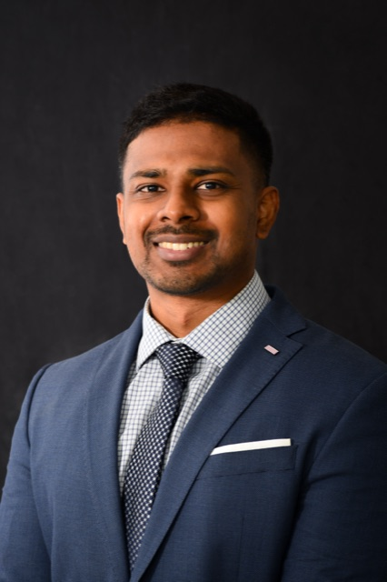

Niall Naidoo
Niall Naidoo is the Chief Executive Officer of Rorschach Innovation Capital, where he leads the firm's overall investment strategy, portfolio development, and long-term capital deployment across Africa. He oversees the firm's three investment verticals: Founder's Fund, Frontier Fund, and Property & Industrialisation, which is grounded in the conviction that disciplined capital and applied technology are the most durable drivers of value on the continent.
Niall brings a track record across the full investment lifecycle. Over a decade at the University of Cape Town, he led the institution's technology spin-out strategy — sourcing, investing in, and actively managing start-ups built from university IP, and executing exits. Prior to joining UCT, he executed sell-mandated transactions and led operational turnarounds in family-led businesses. He is also the founder of MediCoach, Rorschach's most successful portfolio company to date, which came out of his research portfolio. His professional expertise spans corporate finance, private equity, venture capital, innovation management, and management consulting. Niall holds an MBA and is currently completing a PhD in Health Technology Assessments.
niall.naidoo@rorschach.co.za